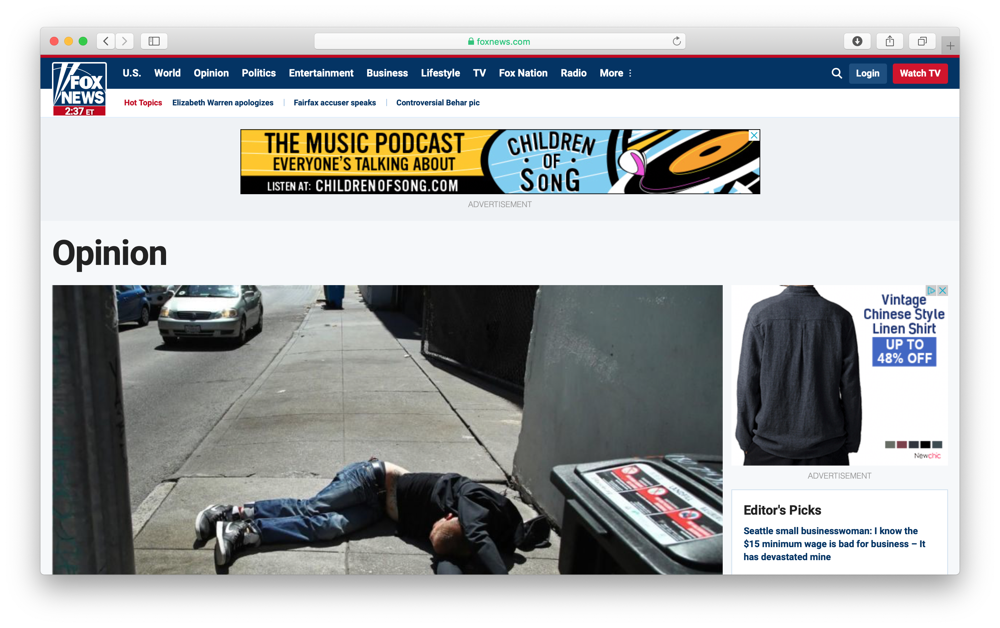
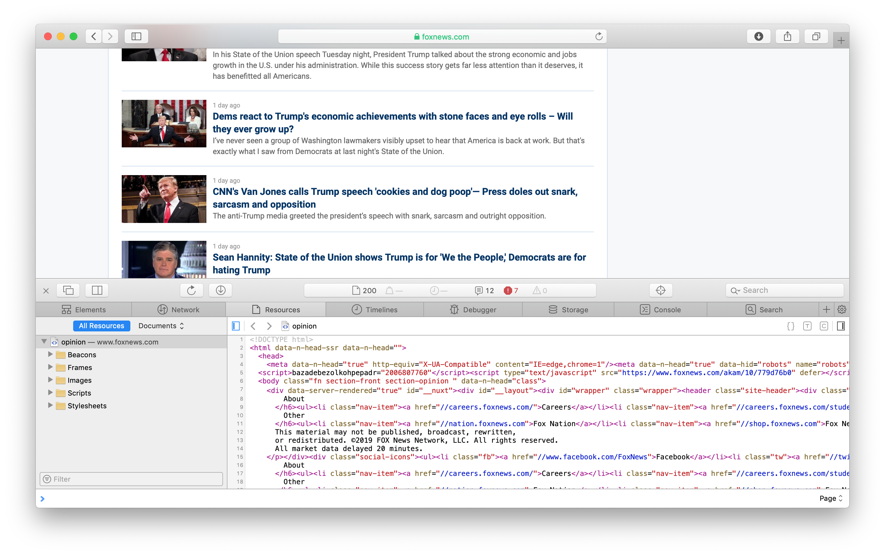
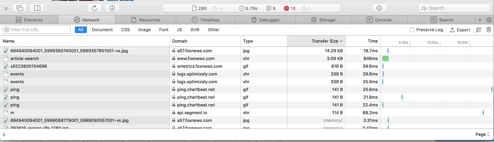
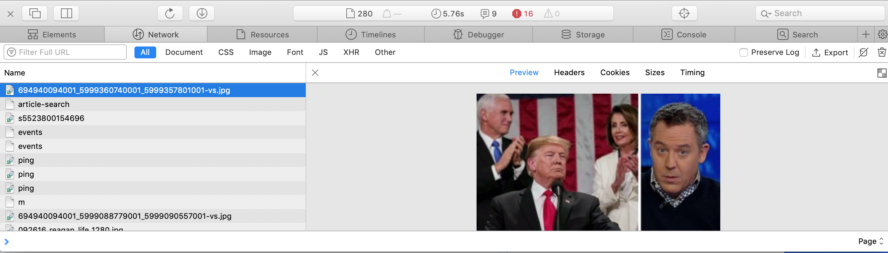
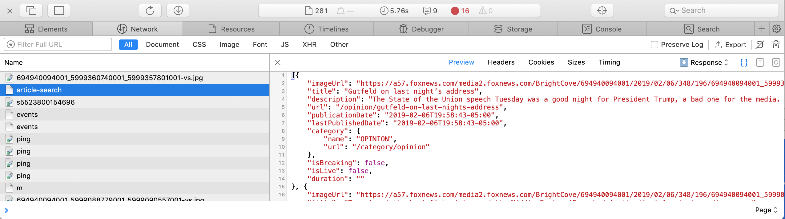
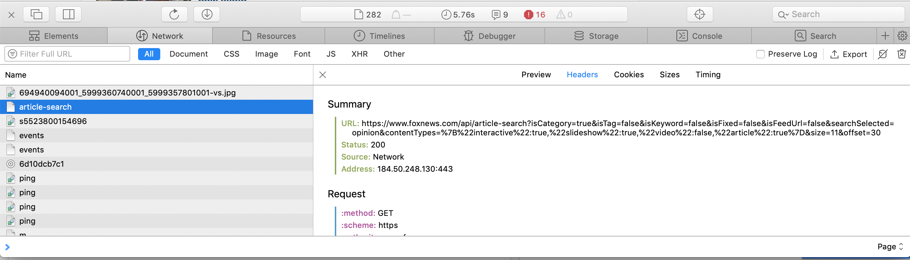

Undocument APIs¶
Social scientists are often interested in collecting massive amounts of digital data from specific websites. When you are fortunate, someone else has already scrapped it for you and has released in on GitHub or as a Kaggle dataset. Sometimes the website provides an API, an interface for collecting the data in a systematic way that is usually reasonably well-document. The most prominent of these for social scientists is probably Twitter, who have enabled hundreds of academic studies by making available information about posts and users.
Other times, an API exists and is being used by the website, but information about is not publicly available. Most website searches, for example, involve using an internal web API. Your search term, along with other relevant parameters, is used to extract the corresponding results from a dataset and then displayed on a web page. While we see the data as part of a web page, the data is often transmitted in a different, more research-friend format, usually in a JSON format. Using an undocumented API allows you to systematically collect the data without the parsing the HTML of each page.
Below, I walk through the steps I recently used when trying to gather Fox News Opinion articles. In this case, the API doesn’t return the full text of the articles, but, as is often the case, returns all the metadata about the article, including the article URL for subsequent scraping.
I use Python, but the overall logic is similar for other languages.
I begin by enabling the developer toolbar on my browser. In Safari, this is under Preferences->Advanced and then clicking Show Develop Menu in Menu Bar. The process is similar in Chrome.
I visited the front page.
I clicked on Opinion, the section I wanted to scrape. 
I scrolled down the page and found a list of articles with a Show More button. This type of button, which leads to the next set of results, is a key component for understanding how the webpage is structured.
In this case, Show More does not load a new page but it does expand the number of results shown on the existing page. If you copy the link associated with this button (https://www.foxnews.com/opinion#) and paste it in a new browser window, it merely displays the first set of results, so that is a dead end for uncovering an API.
To be confident that there might be a decent number of articles available, I clicked the Show More button several times. Each time it loaded more articles.
Lots of data is passed between my computer and the Foxnews website with each click. Additional information about these streams can be revealed through the Develop menu and then the Show Page Resources option.
This defaults to showing the page’s HTML code. 
To look for signs of an API, I click on the Network tab. Results are sometimes already listed, but I start clean by using the trash icon on the far right. With the Network tab visible, I then click Show More on the web page. Each resource exchanged between my computer and various servers are now displayed. When the action stops, I sort the list by size. 
I now review each of the items for something that looks like the results of search API, a plain text file with the search results.
Usually, the top of the list displays the images that the page retrieved. Images usually have a .png or .jpg extension. Selecting the first item in the results, an JPG with a name full of numbers, confirms that it is a picture.

The name of the second item, article-search has more promise. The Preview tab shows that this is a JSON object that appears to be a list of the articles that were returned after the Show More button was pressed. Bingo!

The Header tab reveals the specific URL that returned this JSON. 
The URL has all the signs of an undocumented API. First, it contains “API” as part of the string. Second, it includes a series of search parameters, such as isCategory and size. Now I copy the URL and paste and save it as a Python string. I split the string over several lines to view it more clearly.
url = ('https://www.foxnews.com/api/article-search?'
'isCategory=true&isTag=false&isKeyword=false&'
'isFixed=false&isFeedUrl=false&searchSelected=opinion&'
'contentTypes=%7B%22interactive%22:true,%22slideshow%22:true,%22video%22:false,%22article%22:true%7D&'
'size=11&offset=30')
The next step is to see if Python can access the API with a straightforward command. Some APIs require confirmation that the search is originating from original websites, while others do not enforce that. Figuring out the right way to programmatically access the website is a process of trial and error. I use the requests library.
import requests
r = requests.get(url)
r.status_code
200
A status code of 200 means that something was returned.
Since it looked like a JSON object when viewed in the browser, I take advantage of the requests JSON decoder.
r.json()
[{'category': {'name': "Laura Ingraham's Monologue",
'url': '/category/shows/ingraham-angle/transcript/lauras-monologue'},
'description': "Another day, another wacky liberal steps on to the 2020 field. And although it wasn't a real surprise when Vermont socialist, Bernie Sanders decided to formally enter the race, it's always stunning to hear what the Muppet-like leftie actually believes.",
'duration': '',
'imageUrl': 'https://a57.foxnews.com/media2.foxnews.com/BrightCove/694940094001/2019/02/20/348/196/694940094001_6004324363001_6004323407001-vs.jpg?ve=1&tl=1',
'isBreaking': False,
'isLive': False,
'lastPublishedDate': '2019-02-20T08:39:06-05:00',
'publicationDate': '2019-02-20T08:39:06-05:00',
'title': 'Laura Ingraham: Meet the candidates – Every day another wacky liberal steps on to the 2020 field',
'url': '/opinion/laura-ingraham-meet-the-candidates-every-day-another-wacky-liberal-steps-on-to-the-2020-field'},
{'category': {'name': "Tucker Carlson's Monologue",
'url': '/category/shows/tucker-carlson-tonight/transcript/tuckers-monologue'},
'description': 'Identity politics is a tactic designed to prevent conversations dangerous to the ruling class, obviously. It is also a way for some of the most privileged people in America to recast themselves as victims.\xa0',
'duration': '',
'imageUrl': 'https://a57.foxnews.com/media2.foxnews.com/BrightCove/694940094001/2019/02/20/348/196/694940094001_6004284786001_6004281395001-vs.jpg?ve=1&tl=1',
'isBreaking': False,
'isLive': False,
'lastPublishedDate': '2019-02-20T07:13:09-05:00',
'publicationDate': '2019-02-20T07:13:09-05:00',
'title': "Tucker Carlson: Identity politics is a scam and it's not so different from the one Jussie Smollett just pulled",
'url': '/opinion/tucker-carlson-identity-politics-is-a-scam-and-its-not-so-different-from-the-one-jussie-smollett-just-pulled'},
{'category': {'name': 'OPINION', 'url': '/category/opinion'},
'description': 'As this socialist tragedy unfolds in Venezuela, my questions is this: Do the American people know how deadly socialism is, and how real the threat of it is here in the United States?',
'duration': '',
'imageUrl': 'https://a57.foxnews.com/media2.foxnews.com/BrightCove/694940094001/2019/02/19/348/196/694940094001_6003795855001_6003798058001-vs.jpg?ve=1&tl=1',
'isBreaking': False,
'isLive': False,
'lastPublishedDate': '2019-02-20T04:00:51-05:00',
'publicationDate': '2019-02-20T04:00:51-05:00',
'title': 'Charlie Kirk: Americans must wake up and fight against the socialist movement that’s already well underway',
'url': '/opinion/charlie-kirk-americans-must-wake-up-and-fight-against-the-socialist-movement-thats-already-well-underway'},
{'category': {'name': 'OPINION', 'url': '/category/opinion'},
'description': 'I lost a friend last week. She was 42 years old, and it was a drug overdose. She was beautiful, smart, kind. I gave a eulogy at her funeral. Peering at her loved ones and our mutual friends through a wall of tears, I said she had been a burst of color in a gray world. She was a real person, and now she’s gone.',
'duration': '',
'imageUrl': 'https://a57.foxnews.com/media2.foxnews.com/BrightCove/694940094001/2019/01/16/348/196/694940094001_5989963110001_5989957792001-vs.jpg?ve=1&tl=1',
'isBreaking': False,
'isLive': False,
'lastPublishedDate': '2019-02-20T04:00:43-05:00',
'publicationDate': '2019-02-20T04:00:43-05:00',
'title': 'The opioid epidemic keeps killing my friends',
'url': '/opinion/the-opioid-epidemic-keeps-killing-my-friends'},
{'category': {'name': 'OPINION', 'url': '/category/opinion'},
'description': 'Trump has gotten Pyongyang to come to Hanoi. Now the challenge is for Pyongyang to become Hanoi.',
'duration': '',
'imageUrl': 'https://a57.foxnews.com/static.foxnews.com/foxnews.com/content/uploads/2019/02/348/196/NKO020619-e1549447177848.jpg?ve=1&tl=1',
'isBreaking': False,
'isLive': False,
'lastPublishedDate': '2019-02-20T04:00:24-05:00',
'publicationDate': '2019-02-20T04:00:24-05:00',
'title': "Trump's big challenge at the upcoming North Korea summit",
'url': '/opinion/trumps-big-challenge-at-the-upcoming-north-korea-summit'},
{'category': {'name': 'OPINION', 'url': '/category/opinion'},
'description': 'Rep. Ilhan Omar is a leading critic of Israel in Congress and pretends this has nothing to do with her feelings about the Jewish people.',
'duration': '',
'imageUrl': 'https://a57.foxnews.com/media2.foxnews.com/BrightCove/694940094001/2019/02/16/348/196/694940094001_6003003306001_6003006060001-vs.jpg?ve=1&tl=1',
'isBreaking': False,
'isLive': False,
'lastPublishedDate': '2019-02-20T04:00:12-05:00',
'publicationDate': '2019-02-20T04:00:12-05:00',
'title': 'Dems shouldn’t support anti-Israel Rep. Ilhan Omar – She doesn’t speak for me and other American Muslims',
'url': '/opinion/dems-shouldnt-support-anti-israel-rep-ilhan-omar-she-doesnt-speak-for-me-and-other-american-muslims'},
{'category': {'name': 'OPINION', 'url': '/category/opinion'},
'description': 'Democratic socialist Bernie Sanders is running for the Democratic presidential nomination again, as the far left struggles with moderates for control of the party.',
'duration': '',
'imageUrl': 'https://a57.foxnews.com/media2.foxnews.com/BrightCove/694940094001/2019/02/19/348/196/694940094001_6004224104001_6004219774001-vs.jpg?ve=1&tl=1',
'isBreaking': False,
'isLive': False,
'lastPublishedDate': '2019-02-19T19:53:25-05:00',
'publicationDate': '2019-02-19T19:53:25-05:00',
'title': 'Bernie Sanders’ presidential candidacy will further fracture Democratic Party',
'url': '/opinion/bernie-sanders-presidential-candidacy-will-further-fracture-democratic-party'},
{'category': {'name': 'OPINION', 'url': '/category/opinion'},
'description': 'When someone invokes the ugliness of hate crimes for fraudulent ends, they disrespect every real victim of every lynching and racist attack down through the years.',
'duration': '',
'imageUrl': 'https://a57.foxnews.com/media2.foxnews.com/BrightCove/694940094001/2019/02/19/348/196/694940094001_6003636660001_6003633662001-vs.jpg?ve=1&tl=1',
'isBreaking': False,
'isLive': False,
'lastPublishedDate': '2019-02-19T13:41:44-05:00',
'publicationDate': '2019-02-19T13:41:44-05:00',
'title': 'Geraldo Rivera: If Jussie Smollett’s attack was a hoax, victims of real hate crime will pay the price',
'url': '/opinion/geraldo-rivera-if-jussie-smolletts-attack-was-a-hoax-victims-of-real-hate-crime-will-pay-the-price'},
{'category': {'name': 'OPINION', 'url': '/category/opinion'},
'description': 'Did you notice how, during the Andrew McCabe interview with "60 Minutes," the former FBI acting director kept talking about “articulable facts?”',
'duration': '',
'imageUrl': 'https://a57.foxnews.com/media2.foxnews.com/BrightCove/694940094001/2019/02/19/348/196/694940094001_6003910071001_6003906789001-vs.jpg?ve=1&tl=1',
'isBreaking': False,
'isLive': False,
'lastPublishedDate': '2019-02-19T12:07:39-05:00',
'publicationDate': '2019-02-19T12:07:39-05:00',
'title': "Dan Bongino: Like Comey and Brennan, McCabe finds impetus of Trump probe 'inarticulable'",
'url': '/opinion/dan-bongino-like-comey-and-brennan-mccabe-finds-impetus-of-trump-probe-inarticulable'},
{'category': {'name': 'OPINION', 'url': '/category/opinion'},
'description': "China and the West are locked in a struggle for control of the future of communication technology. If America doesn't take decisive action soon, we'll lose.",
'duration': '',
'imageUrl': 'https://a57.foxnews.com/static.foxnews.com/foxnews.com/content/uploads/2018/09/348/196/ap18143328116561.jpg?ve=1&tl=1',
'isBreaking': False,
'isLive': False,
'lastPublishedDate': '2019-02-19T11:58:24-05:00',
'publicationDate': '2019-02-19T11:58:24-05:00',
'title': 'Newt Gingrich: America in race against China - and the clock - to control future of tech',
'url': '/opinion/newt-gingrich-america-in-race-against-china-and-the-clock-to-control-future-of-tech'},
{'category': {'name': 'OPINION', 'url': '/category/opinion'},
'description': 'Many experts on the Middle East never thought they’d see the day the foreign ministers of Saudi Arabia, Bahrain, Oman and the United Arab Emirates would be sitting collegially with the prime minister of Israel.',
'duration': '',
'imageUrl': 'https://a57.foxnews.com/media2.foxnews.com/BrightCove/694940094001/2019/02/11/348/196/694940094001_6000890885001_6000881936001-vs.jpg?ve=1&tl=1',
'isBreaking': False,
'isLive': False,
'lastPublishedDate': '2019-02-19T10:45:37-05:00',
'publicationDate': '2019-02-19T10:45:37-05:00',
'title': 'Iran should return to ancient teachings of Islam, a religion hijacked in 1979 by a dictatorial regime',
'url': '/opinion/iran-should-return-to-ancient-teachings-of-islam-a-religion-hijacked-in-1979-by-a-dictatorial-regime'}]
The best way to turn a JSON into usable a format is with the pandas library.
import pandas as pd
df = pd.DataFrame(r.json())
df.head()
| category | description | duration | imageUrl | isBreaking | isLive | lastPublishedDate | publicationDate | title | url | |
|---|---|---|---|---|---|---|---|---|---|---|
| 0 | {'name': 'Laura Ingraham's Monologue', 'url': ... | Another day, another wacky liberal steps on to... | https://a57.foxnews.com/media2.foxnews.com/Bri... | False | False | 2019-02-20T08:39:06-05:00 | 2019-02-20T08:39:06-05:00 | Laura Ingraham: Meet the candidates – Every da... | /opinion/laura-ingraham-meet-the-candidates-ev... | |
| 1 | {'name': 'Tucker Carlson's Monologue', 'url': ... | Identity politics is a tactic designed to prev... | https://a57.foxnews.com/media2.foxnews.com/Bri... | False | False | 2019-02-20T07:13:09-05:00 | 2019-02-20T07:13:09-05:00 | Tucker Carlson: Identity politics is a scam an... | /opinion/tucker-carlson-identity-politics-is-a... | |
| 2 | {'name': 'OPINION', 'url': '/category/opinion'} | As this socialist tragedy unfolds in Venezuela... | https://a57.foxnews.com/media2.foxnews.com/Bri... | False | False | 2019-02-20T04:00:51-05:00 | 2019-02-20T04:00:51-05:00 | Charlie Kirk: Americans must wake up and fight... | /opinion/charlie-kirk-americans-must-wake-up-a... | |
| 3 | {'name': 'OPINION', 'url': '/category/opinion'} | I lost a friend last week. She was 42 years ol... | https://a57.foxnews.com/media2.foxnews.com/Bri... | False | False | 2019-02-20T04:00:43-05:00 | 2019-02-20T04:00:43-05:00 | The opioid epidemic keeps killing my friends | /opinion/the-opioid-epidemic-keeps-killing-my-... | |
| 4 | {'name': 'OPINION', 'url': '/category/opinion'} | Trump has gotten Pyongyang to come to Hanoi. N... | https://a57.foxnews.com/static.foxnews.com/fox... | False | False | 2019-02-20T04:00:24-05:00 | 2019-02-20T04:00:24-05:00 | Trump's big challenge at the upcoming North Ko... | /opinion/trumps-big-challenge-at-the-upcoming-... |
That looks pretty good. The JSON appears to have some nested elements in it. For example, Category contains a dictionary. These can often be flattened with json_normalize.
from pandas.io.json import json_normalize
df = json_normalize(r.json())
df.head()
| category.name | category.url | description | duration | imageUrl | isBreaking | isLive | lastPublishedDate | publicationDate | title | url | |
|---|---|---|---|---|---|---|---|---|---|---|---|
| 0 | Laura Ingraham's Monologue | /category/shows/ingraham-angle/transcript/laur... | Another day, another wacky liberal steps on to... | https://a57.foxnews.com/media2.foxnews.com/Bri... | False | False | 2019-02-20T08:39:06-05:00 | 2019-02-20T08:39:06-05:00 | Laura Ingraham: Meet the candidates – Every da... | /opinion/laura-ingraham-meet-the-candidates-ev... | |
| 1 | Tucker Carlson's Monologue | /category/shows/tucker-carlson-tonight/transcr... | Identity politics is a tactic designed to prev... | https://a57.foxnews.com/media2.foxnews.com/Bri... | False | False | 2019-02-20T07:13:09-05:00 | 2019-02-20T07:13:09-05:00 | Tucker Carlson: Identity politics is a scam an... | /opinion/tucker-carlson-identity-politics-is-a... | |
| 2 | OPINION | /category/opinion | As this socialist tragedy unfolds in Venezuela... | https://a57.foxnews.com/media2.foxnews.com/Bri... | False | False | 2019-02-20T04:00:51-05:00 | 2019-02-20T04:00:51-05:00 | Charlie Kirk: Americans must wake up and fight... | /opinion/charlie-kirk-americans-must-wake-up-a... | |
| 3 | OPINION | /category/opinion | I lost a friend last week. She was 42 years ol... | https://a57.foxnews.com/media2.foxnews.com/Bri... | False | False | 2019-02-20T04:00:43-05:00 | 2019-02-20T04:00:43-05:00 | The opioid epidemic keeps killing my friends | /opinion/the-opioid-epidemic-keeps-killing-my-... | |
| 4 | OPINION | /category/opinion | Trump has gotten Pyongyang to come to Hanoi. N... | https://a57.foxnews.com/static.foxnews.com/fox... | False | False | 2019-02-20T04:00:24-05:00 | 2019-02-20T04:00:24-05:00 | Trump's big challenge at the upcoming North Ko... | /opinion/trumps-big-challenge-at-the-upcoming-... |
Great! This process demonstrates that FoxNews has an undocumented API that can be accessed via Python. The dataset, however, only has a few cases.
len(df)
11
The next step is to see if more data can be collected. I usually focus on two parameters: How do I get to the next set of results? Can I get more results with each call?
print(url)
https://www.foxnews.com/api/article-search?isCategory=true&isTag=false&isKeyword=false&isFixed=false&isFeedUrl=false&searchSelected=opinion&contentTypes=%7B%22interactive%22:true,%22slideshow%22:true,%22video%22:false,%22article%22:true%7D&size=11&offset=30
Looking back at the URL, the likely suspects for manipulation are size, which usually determines the number of results, and offset which usually means “start with the nth result”. I first check to see how many results can be returned in one call. If the answer is 10,000, I don’t need to do much more.
Since I’ll be making many calls using the API, I write a quick function to take the URL and return a dataframe. Once I’m confident it will work, I would likely make a more robust function that allows more direct manipulation of the parameters, but I don’t want to spend too much time on that if the whole API is a dead end.
def fox_df(url):
r = requests.get(url)
df = json_normalize(r.json())
print('Return a dataframe of length',len(df))
return df
I confirm that the function works using the original url.
fox_df(url)
Return a dataframe of length 11
| category.name | category.url | description | duration | imageUrl | isBreaking | isLive | lastPublishedDate | publicationDate | title | url | |
|---|---|---|---|---|---|---|---|---|---|---|---|
| 0 | Laura Ingraham's Monologue | /category/shows/ingraham-angle/transcript/laur... | Another day, another wacky liberal steps on to... | https://a57.foxnews.com/media2.foxnews.com/Bri... | False | False | 2019-02-20T08:39:06-05:00 | 2019-02-20T08:39:06-05:00 | Laura Ingraham: Meet the candidates – Every da... | /opinion/laura-ingraham-meet-the-candidates-ev... | |
| 1 | Tucker Carlson's Monologue | /category/shows/tucker-carlson-tonight/transcr... | Identity politics is a tactic designed to prev... | https://a57.foxnews.com/media2.foxnews.com/Bri... | False | False | 2019-02-20T07:13:09-05:00 | 2019-02-20T07:13:09-05:00 | Tucker Carlson: Identity politics is a scam an... | /opinion/tucker-carlson-identity-politics-is-a... | |
| 2 | OPINION | /category/opinion | As this socialist tragedy unfolds in Venezuela... | https://a57.foxnews.com/media2.foxnews.com/Bri... | False | False | 2019-02-20T04:00:51-05:00 | 2019-02-20T04:00:51-05:00 | Charlie Kirk: Americans must wake up and fight... | /opinion/charlie-kirk-americans-must-wake-up-a... | |
| 3 | OPINION | /category/opinion | I lost a friend last week. She was 42 years ol... | https://a57.foxnews.com/media2.foxnews.com/Bri... | False | False | 2019-02-20T04:00:43-05:00 | 2019-02-20T04:00:43-05:00 | The opioid epidemic keeps killing my friends | /opinion/the-opioid-epidemic-keeps-killing-my-... | |
| 4 | OPINION | /category/opinion | Trump has gotten Pyongyang to come to Hanoi. N... | https://a57.foxnews.com/static.foxnews.com/fox... | False | False | 2019-02-20T04:00:24-05:00 | 2019-02-20T04:00:24-05:00 | Trump's big challenge at the upcoming North Ko... | /opinion/trumps-big-challenge-at-the-upcoming-... | |
| 5 | OPINION | /category/opinion | Rep. Ilhan Omar is a leading critic of Israel ... | https://a57.foxnews.com/media2.foxnews.com/Bri... | False | False | 2019-02-20T04:00:12-05:00 | 2019-02-20T04:00:12-05:00 | Dems shouldn’t support anti-Israel Rep. Ilhan ... | /opinion/dems-shouldnt-support-anti-israel-rep... | |
| 6 | OPINION | /category/opinion | Democratic socialist Bernie Sanders is running... | https://a57.foxnews.com/media2.foxnews.com/Bri... | False | False | 2019-02-19T19:53:25-05:00 | 2019-02-19T19:53:25-05:00 | Bernie Sanders’ presidential candidacy will fu... | /opinion/bernie-sanders-presidential-candidacy... | |
| 7 | OPINION | /category/opinion | When someone invokes the ugliness of hate crim... | https://a57.foxnews.com/media2.foxnews.com/Bri... | False | False | 2019-02-19T13:41:44-05:00 | 2019-02-19T13:41:44-05:00 | Geraldo Rivera: If Jussie Smollett’s attack wa... | /opinion/geraldo-rivera-if-jussie-smolletts-at... | |
| 8 | OPINION | /category/opinion | Did you notice how, during the Andrew McCabe i... | https://a57.foxnews.com/media2.foxnews.com/Bri... | False | False | 2019-02-19T12:07:39-05:00 | 2019-02-19T12:07:39-05:00 | Dan Bongino: Like Comey and Brennan, McCabe fi... | /opinion/dan-bongino-like-comey-and-brennan-mc... | |
| 9 | OPINION | /category/opinion | China and the West are locked in a struggle fo... | https://a57.foxnews.com/static.foxnews.com/fox... | False | False | 2019-02-19T11:58:24-05:00 | 2019-02-19T11:58:24-05:00 | Newt Gingrich: America in race against China ... | /opinion/newt-gingrich-america-in-race-against... | |
| 10 | OPINION | /category/opinion | Many experts on the Middle East never thought ... | https://a57.foxnews.com/media2.foxnews.com/Bri... | False | False | 2019-02-19T10:45:37-05:00 | 2019-02-19T10:45:37-05:00 | Iran should return to ancient teachings of Isl... | /opinion/iran-should-return-to-ancient-teachin... |
As a first attempt, I try to retrieve 100 results.
url100 = url.replace('size=11','size=100')
fox_df(url100)
Return a dataframe of length 30
| category.name | category.url | description | duration | imageUrl | isBreaking | isLive | lastPublishedDate | publicationDate | title | url | |
|---|---|---|---|---|---|---|---|---|---|---|---|
| 0 | Laura Ingraham's Monologue | /category/shows/ingraham-angle/transcript/laur... | Another day, another wacky liberal steps on to... | https://a57.foxnews.com/media2.foxnews.com/Bri... | False | False | 2019-02-20T08:39:06-05:00 | 2019-02-20T08:39:06-05:00 | Laura Ingraham: Meet the candidates – Every da... | /opinion/laura-ingraham-meet-the-candidates-ev... | |
| 1 | Tucker Carlson's Monologue | /category/shows/tucker-carlson-tonight/transcr... | Identity politics is a tactic designed to prev... | https://a57.foxnews.com/media2.foxnews.com/Bri... | False | False | 2019-02-20T07:13:09-05:00 | 2019-02-20T07:13:09-05:00 | Tucker Carlson: Identity politics is a scam an... | /opinion/tucker-carlson-identity-politics-is-a... | |
| 2 | OPINION | /category/opinion | As this socialist tragedy unfolds in Venezuela... | https://a57.foxnews.com/media2.foxnews.com/Bri... | False | False | 2019-02-20T04:00:51-05:00 | 2019-02-20T04:00:51-05:00 | Charlie Kirk: Americans must wake up and fight... | /opinion/charlie-kirk-americans-must-wake-up-a... | |
| 3 | OPINION | /category/opinion | I lost a friend last week. She was 42 years ol... | https://a57.foxnews.com/media2.foxnews.com/Bri... | False | False | 2019-02-20T04:00:43-05:00 | 2019-02-20T04:00:43-05:00 | The opioid epidemic keeps killing my friends | /opinion/the-opioid-epidemic-keeps-killing-my-... | |
| 4 | OPINION | /category/opinion | Trump has gotten Pyongyang to come to Hanoi. N... | https://a57.foxnews.com/static.foxnews.com/fox... | False | False | 2019-02-20T04:00:24-05:00 | 2019-02-20T04:00:24-05:00 | Trump's big challenge at the upcoming North Ko... | /opinion/trumps-big-challenge-at-the-upcoming-... | |
| 5 | OPINION | /category/opinion | Rep. Ilhan Omar is a leading critic of Israel ... | https://a57.foxnews.com/media2.foxnews.com/Bri... | False | False | 2019-02-20T04:00:12-05:00 | 2019-02-20T04:00:12-05:00 | Dems shouldn’t support anti-Israel Rep. Ilhan ... | /opinion/dems-shouldnt-support-anti-israel-rep... | |
| 6 | OPINION | /category/opinion | Democratic socialist Bernie Sanders is running... | https://a57.foxnews.com/media2.foxnews.com/Bri... | False | False | 2019-02-19T19:53:25-05:00 | 2019-02-19T19:53:25-05:00 | Bernie Sanders’ presidential candidacy will fu... | /opinion/bernie-sanders-presidential-candidacy... | |
| 7 | OPINION | /category/opinion | When someone invokes the ugliness of hate crim... | https://a57.foxnews.com/media2.foxnews.com/Bri... | False | False | 2019-02-19T13:41:44-05:00 | 2019-02-19T13:41:44-05:00 | Geraldo Rivera: If Jussie Smollett’s attack wa... | /opinion/geraldo-rivera-if-jussie-smolletts-at... | |
| 8 | OPINION | /category/opinion | Did you notice how, during the Andrew McCabe i... | https://a57.foxnews.com/media2.foxnews.com/Bri... | False | False | 2019-02-19T12:07:39-05:00 | 2019-02-19T12:07:39-05:00 | Dan Bongino: Like Comey and Brennan, McCabe fi... | /opinion/dan-bongino-like-comey-and-brennan-mc... | |
| 9 | OPINION | /category/opinion | China and the West are locked in a struggle fo... | https://a57.foxnews.com/static.foxnews.com/fox... | False | False | 2019-02-19T11:58:24-05:00 | 2019-02-19T11:58:24-05:00 | Newt Gingrich: America in race against China ... | /opinion/newt-gingrich-america-in-race-against... | |
| 10 | OPINION | /category/opinion | Many experts on the Middle East never thought ... | https://a57.foxnews.com/media2.foxnews.com/Bri... | False | False | 2019-02-19T10:45:37-05:00 | 2019-02-19T10:45:37-05:00 | Iran should return to ancient teachings of Isl... | /opinion/iran-should-return-to-ancient-teachin... | |
| 11 | OPINION | /category/opinion | I have often argued that we don't have a true ... | https://a57.foxnews.com/static.foxnews.com/fox... | False | False | 2019-02-19T10:19:52-05:00 | 2019-02-19T10:19:52-05:00 | Judge Andrew Napolitano: The need for the cons... | /opinion/judge-andrew-napolitano-the-need-for-... | |
| 12 | OPINION | /category/opinion | In a viral exchange at a congressional hearing... | https://a57.foxnews.com/media2.foxnews.com/Bri... | False | False | 2019-02-19T08:51:59-05:00 | 2019-02-19T08:51:59-05:00 | Rich Lowry: Ilhan Omar’s big lie | /opinion/rich-lowry-ilhan-omars-big-lie | |
| 13 | OPINION | /category/opinion | Why does the left insist on inventing bigoted ... | https://a57.foxnews.com/static.foxnews.com/fox... | False | False | 2019-02-19T06:35:18-05:00 | 2019-02-19T06:35:18-05:00 | Tucker Carlson: Why the left so desperately wa... | /opinion/tucker-carlson-why-the-left-so-desper... | |
| 14 | OPINION | /category/opinion | The new generation of Democrats in power may l... | https://a57.foxnews.com/static.foxnews.com/fox... | False | False | 2019-02-19T04:00:46-05:00 | 2019-02-19T04:00:46-05:00 | New Dem members of Congress may look diverse b... | /opinion/new-dem-members-of-congress-may-look-... | |
| 15 | OPINION | /category/opinion | I spent much of the last few years travelling ... | https://a57.foxnews.com/static.foxnews.com/fox... | False | False | 2019-02-19T04:00:42-05:00 | 2019-02-19T04:00:42-05:00 | Trump's election was fueled by social decay an... | /opinion/trumps-election-was-fueled-by-social-... | |
| 16 | OPINION | /category/opinion | Alexandria Ocasio-Cortez has done our country ... | https://a57.foxnews.com/media2.foxnews.com/Bri... | False | False | 2019-02-19T04:00:41-05:00 | 2019-02-19T04:00:41-05:00 | Liz Peek: Alexandria Ocasio-Cortez’s Amazon ta... | /opinion/liz-peek-alexandria-ocasio-cortezs-am... | |
| 17 | OPINION | /category/opinion | Pat Caddell very simply invented political con... | https://a57.foxnews.com/media2.foxnews.com/Bri... | False | False | 2019-02-19T04:00:27-05:00 | 2019-02-19T04:00:27-05:00 | Doug Schoen: Remembering Pat Caddell -- a coll... | /opinion/doug-schoen-remembering-pat-caddell-a... | |
| 18 | OPINION | /category/opinion | There’s absolutely no need for the strong arm ... | https://a57.foxnews.com/media2.foxnews.com/Bri... | False | False | 2019-02-19T04:00:14-05:00 | 2019-02-19T04:00:14-05:00 | Virginia’s ‘Green New Deal’ exposes what Democ... | /opinion/virginias-green-new-deal-exposes-what... | |
| 19 | OPINION | /category/opinion | The fight against drug trafficking in our coun... | https://a57.foxnews.com/static.foxnews.com/fox... | False | False | 2019-02-19T04:00:12-05:00 | 2019-02-19T04:00:12-05:00 | Rep. Michael Guest: President Trump’s border w... | /opinion/rep-michael-guest-president-trumps-bo... | |
| 20 | OPINION | /category/opinion | Andrew McCabe is a good witness and he made a ... | https://a57.foxnews.com/media2.foxnews.com/Bri... | False | False | 2019-02-18T13:16:06-05:00 | 2019-02-18T13:16:06-05:00 | Andrew McCarthy: McCabe and ‘60 Minutes’ avoid... | /opinion/andrew-mccarthy-mccabe-and-60-minutes... | |
| 21 | OPINION | /category/opinion | Public weariness, combined with hyperventilati... | https://a57.foxnews.com/media2.foxnews.com/Bri... | False | False | 2019-02-18T12:42:43-05:00 | 2019-02-18T12:42:43-05:00 | As Democrats and Republicans barrel toward 202... | /opinion/as-democrats-and-republicans-barrel-t... | |
| 22 | Faith & Values | /category/faith-values | In order to move past tragedies, we must allow... | https://a57.foxnews.com/static.foxnews.com/fox... | False | False | 2019-02-18T10:45:04-05:00 | 2019-02-18T10:45:04-05:00 | 4 ways to overcome trauma and tragedy (always ... | /opinion/4-ways-to-overcome-trauma-and-tragedy... | |
| 23 | Amazon | /category/tech/companies/amazon | Amazon’s decision last week to scrap plans for... | https://a57.foxnews.com/media2.foxnews.com/Bri... | False | False | 2019-02-18T08:16:20-05:00 | 2019-02-18T08:16:20-05:00 | Michael Goodwin: Amazon's New York debacle ope... | /opinion/michael-goodwin-amazons-new-york-deba... | |
| 24 | The Next Revolution | /category/shows/the-next-revolution | A New York Times op-ed by Jonathan Rauch and P... | https://a57.foxnews.com/media2.foxnews.com/Bri... | False | False | 2019-02-18T07:42:33-05:00 | 2019-02-18T07:42:33-05:00 | Steve Hilton: Never Trumpers just hate that Tr... | /opinion/steve-hilton-never-trumpers-just-hate... | |
| 25 | OPINION | /category/opinion | While John Wayne might have eschewed backup ca... | https://a57.foxnews.com/static.foxnews.com/fox... | False | False | 2019-02-18T04:00:56-05:00 | 2019-02-18T04:00:56-05:00 | No Presidents Day car sales for me: What I lea... | /opinion/no-presidents-day-car-sales-for-me-wh... | |
| 26 | OPINION | /category/opinion | The political world barely raised its eyebrows... | https://a57.foxnews.com/static.foxnews.com/fox... | False | False | 2019-02-18T04:00:31-05:00 | 2019-02-18T04:00:31-05:00 | Democrats ignore Bernie Sanders’ 2020 announce... | /opinion/democrats-ignore-bernie-sanders-2020-... | |
| 27 | OPINION | /category/opinion | On President’s Day, perhaps it would be helpfu... | https://a57.foxnews.com/static.foxnews.com/fox... | False | False | 2019-02-18T04:00:24-05:00 | 2019-02-18T04:00:24-05:00 | On Presidents Day, honor those who have served... | /opinion/on-presidents-day-honor-those-who-hav... | |
| 28 | OPINION | /category/opinion | Andrew McCabe lied multiple times to federal i... | https://a57.foxnews.com/media2.foxnews.com/Bri... | False | False | 2019-02-18T04:00:21-05:00 | 2019-02-18T04:00:21-05:00 | Jason Chaffetz: FBI’s Andrew McCabe should be ... | /opinion/jason-chaffetz-fbis-andrew-mccabe-sho... | |
| 29 | OPINION | /category/opinion | Ask any college senior where the best jobs are... | https://a57.foxnews.com/static.foxnews.com/fox... | False | False | 2019-02-18T04:00:13-05:00 | 2019-02-18T04:00:13-05:00 | Don't put flyover country in a corner. It's le... | /opinion/dont-put-flyover-country-in-a-corner-... |
This does not return 100 results, but it does return 30, which appears to be the internal maximum. Collecting a larger corpus of article metadata will need to be done in batches of 30.
The next question is how far back can the API go? Here, the first suspect is the offset parameter. The current value of 30 is usually associated with starting with the 30th results. So an offset of 30 with a size of 10 is likely to return results 30-39.
As a first pass, I set the value of offset to 0 to get the most recent results.
url_off = url.replace('offset=30','offset=0')
fox_df(url_off)
Return a dataframe of length 11
| category.name | category.url | description | duration | imageUrl | isBreaking | isLive | lastPublishedDate | publicationDate | title | url | |
|---|---|---|---|---|---|---|---|---|---|---|---|
| 0 | Laura Ingraham's Monologue | /category/shows/ingraham-angle/transcript/laur... | Jussie Smollett could not resist the allure of... | https://a57.foxnews.com/media2.foxnews.com/Bri... | False | False | 2019-02-22T08:11:57-05:00 | 2019-02-22T08:11:57-05:00 | Laura Ingraham: Jussie Smollett learned that v... | /opinion/laura-ingraham-smollett-learned-that-... | |
| 1 | Tucker Carlson's Monologue | /category/shows/tucker-carlson-tonight/transcr... | What Smollett allegedly did was not simply ill... | https://a57.foxnews.com/media2.foxnews.com/Bri... | False | False | 2019-02-22T07:47:57-05:00 | 2019-02-22T07:47:57-05:00 | Tucker Carlson: Jussie Smollett pretended to b... | /opinion/tucker-carlson-jussie-smollett-preten... | |
| 2 | Sean Hannity's Monologue | /category/shows/hannity/transcript/hannitys-mo... | The Smollett case proves what I have been sayi... | https://a57.foxnews.com/media2.foxnews.com/Bri... | False | False | 2019-02-22T07:02:10-05:00 | 2019-02-22T07:02:10-05:00 | Sean Hannity: Smollett case proves that journa... | /opinion/sean-hannity-smollett-case-proves-tha... | |
| 3 | Tucker Carlson's Monologue | /category/shows/tucker-carlson-tonight/transcr... | Tucker Carlson: What you should know about 'wo... | https://a57.foxnews.com/media2.foxnews.com/Bri... | False | False | 2019-02-22T06:54:34-05:00 | 2019-02-22T06:51:51-05:00 | Tucker Carlson: 'Woke' billionaires love socia... | /opinion/tucker-carlson-woke-billionaires-love... | |
| 4 | OPINION | /category/opinion | To reduce this flow of illegal immigrants, the... | https://a57.foxnews.com/media2.foxnews.com/Bri... | False | False | 2019-02-22T04:00:27-05:00 | 2019-02-22T04:00:27-05:00 | A border wall isn’t enough – Asylum laws must ... | /opinion/a-border-wall-isnt-enough-asylum-laws... | |
| 5 | OPINION | /category/opinion | The left complains that conservatives are "obs... | https://a57.foxnews.com/media2.foxnews.com/Bri... | False | False | 2019-02-22T04:00:23-05:00 | 2019-02-22T04:00:23-05:00 | Marc Thiessen: Alexandria Ocasio-Cortez is an ... | /opinion/marc-thiessen-alexandria-ocasio-corte... | |
| 6 | OPINION | /category/opinion | The Green New Deal would bring economic ruin a... | https://a57.foxnews.com/media2.foxnews.com/Bri... | False | False | 2019-02-22T04:00:15-05:00 | 2019-02-22T04:00:15-05:00 | Green New Deal support could doom Dem presiden... | /opinion/green-new-deal-support-could-doom-dem... | |
| 7 | OPINION | /category/opinion | From Supreme Court Justice Brett Kavanaugh to ... | https://a57.foxnews.com/static.foxnews.com/fox... | False | False | 2019-02-22T04:00:03-05:00 | 2019-02-22T04:00:03-05:00 | On Smollett, Covington and Kavanaugh, anti-Tru... | /opinion/on-smollett-covington-and-kavanaugh-a... | |
| 8 | OPINION | /category/opinion | The Justice Department should file an indictme... | https://a57.foxnews.com/media2.foxnews.com/Bri... | False | False | 2019-02-21T18:59:10-05:00 | 2019-02-21T18:59:10-05:00 | Andrew McCarthy: Indict the ‘ISIS Bride’ | /opinion/andrew-mccarthy-indict-the-isis-bride | |
| 9 | OPINION | /category/opinion | The activist press embraced Jussie Smollett as... | https://a57.foxnews.com/media2.foxnews.com/Bri... | False | False | 2019-02-21T18:23:31-05:00 | 2019-02-21T18:23:31-05:00 | Gutfeld on Smollett’s arrest | /opinion/gutfeld-on-smolletts-arrest | |
| 10 | OPINION | /category/opinion | Over half a dozen rescue workers in South Afri... | https://a57.foxnews.com/static.foxnews.com/fox... | False | False | 2019-02-21T16:15:22-05:00 | 2019-02-21T16:15:22-05:00 | Amid abortion debate, miraculous rescue of bab... | /opinion/amid-abortion-debate-miraculous-rescu... |
The lastPublicationDate value of the first row is 2019-02-08. Hopefully a larger value will be associated with articles published earlier.
url_off = url.replace('offset=30','offset=100')
fox_df(url_off)
Return a dataframe of length 11
| category.name | category.url | description | duration | imageUrl | isBreaking | isLive | lastPublishedDate | publicationDate | title | url | |
|---|---|---|---|---|---|---|---|---|---|---|---|
| 0 | OPINION | /category/opinion | Critics of the Amazon plan can rejoice in thei... | https://a57.foxnews.com/media2.foxnews.com/Bri... | False | False | 2019-02-14T16:17:04-05:00 | 2019-02-14T16:17:04-05:00 | Amazon quits New York -- 'Victory' by progress... | /opinion/amazon-quits-new-york-victory-by-prog... | |
| 1 | OPINION | /category/opinion | Attorney General Barr is the right man for the... | https://a57.foxnews.com/media2.foxnews.com/Bri... | False | False | 2019-02-14T13:49:21-05:00 | 2019-02-14T13:49:21-05:00 | William Barr is our new attorney general -- He... | /opinion/william-barr-is-our-new-attorney-gene... | |
| 2 | OPINION | /category/opinion | President Trump’s standing has improved over t... | https://a57.foxnews.com/media2.foxnews.com/Bri... | False | False | 2019-02-14T13:32:30-05:00 | 2019-02-14T13:32:30-05:00 | Karl Rove: Trump's approval numbers are going ... | /opinion/karl-rove-trumps-approval-numbers-are... | |
| 3 | OPINION | /category/opinion | All signs indicate that Special Counsel Robert... | https://a57.foxnews.com/media2.foxnews.com/Bri... | False | False | 2019-02-14T11:47:24-05:00 | 2019-02-14T11:47:24-05:00 | David Bossie: Mueller should end his probe and... | /opinion/david-bossie-mueller-should-end-his-p... | |
| 4 | OPINION | /category/opinion | Kamala Harris cannot erase her connections to ... | https://a57.foxnews.com/media2.foxnews.com/Bri... | False | False | 2019-02-14T11:38:28-05:00 | 2019-02-14T11:37:57-05:00 | Kamala Harris is a longtime ally of government... | /opinion/kamala-harris-is-a-longtime-ally-of-g... | |
| 5 | Faith & Values | /category/faith-values | The heart of Christianity is love. The whole b... | https://a57.foxnews.com/static.foxnews.com/fox... | False | False | 2019-02-14T10:14:40-05:00 | 2019-02-14T10:14:40-05:00 | Valentine’s Day: The ‘heart’ of Christianity i... | /opinion/valentines-day-the-heart-of-christian... | |
| 6 | OPINION | /category/opinion | I have been beneath the wedding canopy with mo... | https://a57.foxnews.com/static.foxnews.com/fox... | False | False | 2019-02-14T09:32:35-05:00 | 2019-02-14T04:00:25-05:00 | A Valentine's Day lesson: I have married over ... | /opinion/a-valentines-day-lesson-i-have-marrie... | |
| 7 | Tucker Carlson's Monologue | /category/shows/tucker-carlson-tonight/transcr... | The Green New Deal is not about the environmen... | https://a57.foxnews.com/media2.foxnews.com/Bri... | False | False | 2019-02-14T08:33:26-05:00 | 2019-02-14T08:33:26-05:00 | Tucker Carlson: Green New Deal is a religious ... | /opinion/tucker-carlson-green-new-deal-is-a-re... | |
| 8 | Laura Ingraham's Monologue | /category/shows/ingraham-angle/transcript/laur... | Oh the excitement, oh the promise, it seems li... | https://a57.foxnews.com/media2.foxnews.com/Bri... | False | False | 2019-02-14T08:05:54-05:00 | 2019-02-14T08:05:54-05:00 | Laura Ingraham: California's high speed rail w... | /opinion/laura-ingraham-californias-high-speed... | |
| 9 | OPINION | /category/opinion | It never ceases to amaze that liberals and pro... | https://a57.foxnews.com/media2.foxnews.com/Bri... | False | False | 2019-02-14T07:35:42-05:00 | 2019-02-14T04:00:57-05:00 | Tammy Bruce: Elizabeth Warren, Democrats and t... | /opinion/tammy-bruce-elizabeth-warren-democrat... | |
| 10 | Sean Hannity's Monologue | /category/shows/hannity/transcript/hannitys-mo... | We know this is a president that keeps his pro... | https://a57.foxnews.com/media2.foxnews.com/Bri... | False | False | 2019-02-14T07:06:37-05:00 | 2019-02-14T07:06:37-05:00 | Sean Hannity: Trump keeps his promises. I pred... | /opinion/sean-hannity-trump-keeps-his-promises... |
The article with an offset value of 100 was published on 2019-02-01, or roughly a week before our offset 0. Perfect! Increasing the offset value yields additional article metadata in chronological order.
Next, how far back can we go?
url_off = url.replace('offset=30','offset=1000')
fox_df(url_off)
Return a dataframe of length 11
| category.name | category.url | description | duration | imageUrl | isBreaking | isLive | lastPublishedDate | publicationDate | title | url | |
|---|---|---|---|---|---|---|---|---|---|---|---|
| 0 | OPINION | /category/opinion | The death of a president brings our nation tog... | https://a57.foxnews.com/media2.foxnews.com/Bri... | False | False | 2018-12-05T04:00:35-05:00 | 2018-12-05T04:00:35-05:00 | Remembering George H.W. Bush: Why does it take... | /opinion/remembering-george-h-w-bush-why-does-... | |
| 1 | OPINION | /category/opinion | House Democrats are planning to go after Presi... | https://a57.foxnews.com/static.foxnews.com/fox... | False | False | 2018-12-05T04:00:07-05:00 | 2018-12-05T04:00:07-05:00 | David Bossie: House Democrats plan a witch hun... | /opinion/david-bossie-house-democrats-plan-a-w... | |
| 2 | OPINION | /category/opinion | The struggle to juggle and balance career and ... | https://a57.foxnews.com/media2.foxnews.com/Bri... | False | False | 2018-12-05T04:00:06-05:00 | 2018-12-05T04:00:06-05:00 | Leslie Marshall: Michelle Obama told the truth... | /opinion/leslie-marshall-michelle-obama-told-t... | |
| 3 | OPINION | /category/opinion | This morning Google told me that it would not ... | https://a57.foxnews.com/static.foxnews.com/fox... | False | False | 2018-12-05T04:00:06-05:00 | 2018-12-05T04:00:06-05:00 | John Stossel: Google and Facebook cross 'The C... | /opinion/john-stossel-google-and-facebook-cros... | |
| 4 | OPINION | /category/opinion | President George H.W. Bush called on us to be ... | https://a57.foxnews.com/media2.foxnews.com/Bri... | False | False | 2018-12-05T04:00:06-05:00 | 2018-12-05T04:00:06-05:00 | Marc Thiessen: For just a few days, let's be t... | /opinion/marc-thiessen-for-just-a-few-days-let... | |
| 5 | OPINION | /category/opinion | A sentencing memo that Special Counsel Robert ... | https://a57.foxnews.com/media2.foxnews.com/Bri... | False | False | 2018-12-05T00:53:12-05:00 | 2018-12-05T00:53:12-05:00 | Gregg Jarrett: Mueller strikes out trying to n... | /opinion/mueller-strikes-out-trying-to-nail-tr... | |
| 6 | OPINION | /category/opinion | Democrats need to embrace moderate policies to... | https://a57.foxnews.com/static.foxnews.com/fox... | False | False | 2018-12-04T18:42:11-05:00 | 2018-12-04T18:42:11-05:00 | Doug Schoen: Democrats will be hurt by radical... | /opinion/doug-schoen-democrats-will-be-hurt-by... | |
| 7 | OPINION | /category/opinion | People come and go on our planet, and in our l... | https://a57.foxnews.com/media2.foxnews.com/Bri... | False | False | 2018-12-04T17:40:03-05:00 | 2018-12-04T17:40:03-05:00 | Gutfeld on the passing of George Herbert Walke... | /opinion/gutfeld-on-the-passing-of-george-herb... | |
| 8 | OPINION | /category/opinion | I understand that millions of Americans still ... | https://a57.foxnews.com/media2.foxnews.com/Bri... | False | False | 2018-12-04T16:27:20-05:00 | 2018-12-04T16:27:20-05:00 | Geraldo Rivera: Migrants at our border want a ... | /opinion/geraldo-rivera-migrants-at-our-border... | |
| 9 | OPINION | /category/opinion | People from around the world are recalling Pr... | https://a57.foxnews.com/media2.foxnews.com/Bri... | False | False | 2018-12-04T16:25:31-05:00 | 2018-12-04T16:19:21-05:00 | George H.W. Bush's service dog 'Sully' isn't a... | /opinion/george-h-w-bushs-service-dog-sully-is... | |
| 10 | OPINION | /category/opinion | As I sat a few feet from President Trump while... | https://a57.foxnews.com/static.foxnews.com/fox... | False | False | 2018-12-04T13:27:48-05:00 | 2018-12-04T13:27:48-05:00 | Michael Goodwin: Trump is prepping for all-out... | /opinion/michael-goodwin-trump-is-prepping-for... |
An offset of 1,000 takes us back about nine months.
url_off = url.replace('offset=30','offset=5000')
fox_df(url_off)
Return a dataframe of length 11
| category.name | category.url | description | duration | imageUrl | isBreaking | isLive | lastPublishedDate | publicationDate | title | url | |
|---|---|---|---|---|---|---|---|---|---|---|---|
| 0 | The Americas | /category/world/world-regions/americas | Over the weekend, Venezuela succumbed to dicta... | https://a57.foxnews.com/media2.foxnews.com/Bri... | False | False | 2017-09-26T17:01:26-04:00 | 2017-08-02T10:00:00-04:00 | The world must turn back Venezuela's growing d... | /opinion/the-world-must-turn-back-venezuelas-g... | |
| 1 | Bellwether | /category/columns/bellwether | Just as President Trump prepares to sign punis... | https://a57.foxnews.com/media2.foxnews.com/Bri... | False | False | 2017-09-26T17:01:16-04:00 | 2017-08-02T10:11:00-04:00 | Putin sends Trump a message: Don't mess with us | /opinion/putin-sends-trump-a-message-dont-mess... | |
| 2 | Law | /category/politics/executive/law | Special Counsel Robert Mueller has lost his cr... | https://a57.foxnews.com/media2.foxnews.com/Bri... | False | False | 2017-09-26T17:01:05-04:00 | 2017-08-02T10:21:00-04:00 | Rep. Trent Franks: Robert Mueller must resign | /opinion/rep-trent-franks-robert-mueller-must-... | |
| 3 | Health care | /category/politics/executive/health-care | Conservatives should recognize that the key to... | https://a57.foxnews.com/media2.foxnews.com/Bri... | False | False | 2017-09-26T17:00:53-04:00 | 2017-08-02T12:00:00-04:00 | Newt Gingrich: Republicans must resist the urg... | /opinion/newt-gingrich-republicans-must-resist... | |
| 4 | Budgets | /category/politics/executive/budgets | I follow the news closely, but until I researc... | https://a57.foxnews.com/media2.foxnews.com/Bri... | False | False | 2017-09-26T17:00:40-04:00 | 2017-08-02T15:30:00-04:00 | John Stossel: The Trump budget | /opinion/john-stossel-the-trump-budget | |
| 5 | POLITICS | /category/politics | When the New Yorker's Ryan Lizza first made pu... | https://a57.foxnews.com/media2.foxnews.com/Bri... | False | False | 2017-09-26T17:00:31-04:00 | 2017-08-02T11:17:00-04:00 | The latest lesson in media hypocrisy courtesy ... | /opinion/the-latest-lesson-in-media-hypocrisy-... | |
| 6 | White House | /category/politics/executive/white-house | An old story from Albany is unforgettable. | https://a57.foxnews.com/media2.foxnews.com/Bri... | False | False | 2017-09-26T17:00:16-04:00 | 2017-08-02T11:41:00-04:00 | Trump must learn to wield his political power ... | /opinion/trump-must-learn-to-wield-his-politic... | |
| 7 | Law | /category/politics/executive/law | There was a time, not so long ago, when candid... | https://a57.foxnews.com/media2.foxnews.com/Bri... | False | False | 2017-09-26T17:00:05-04:00 | 2017-08-02T12:17:00-04:00 | Gregg Jarrett: A second special counsel must i... | /opinion/gregg-jarrett-a-second-special-counse... | |
| 8 | IMMIGRATION | /category/us/immigration | At the outset, let me set the record straight:... | https://a57.foxnews.com/media2.foxnews.com/Bri... | False | False | 2017-09-26T16:59:55-04:00 | 2017-08-02T12:40:00-04:00 | Texas Attorney General Paxton: We must phase o... | /opinion/texas-attorney-general-paxton-we-must... | |
| 9 | Todd Starnes | /category/columns/todds-american-dispatch | For the past two years, the Young Americans fo... | https://a57.foxnews.com/static.foxnews.com/fox... | False | False | 2017-09-26T16:59:43-04:00 | 2017-08-02T18:03:00-04:00 | University moves 9/11 flag display to avoid tr... | /opinion/university-moves-9-11-flag-display-to... | |
| 10 | National Anthem Protests | /category/news-events/national-anthem-protests | This weekend, the more than 100 NFL players wh... | https://a57.foxnews.com/media2.foxnews.com/Bri... | False | False | 2017-09-26T16:58:45-04:00 | 2017-09-26T15:42:00-04:00 | Marc Thiessen: Want to protest Trump? Disrespe... | /opinion/marc-thiessen-want-to-protest-trump-d... |
5,000 brings us back to 2017.
url_off = url.replace('offset=30','offset=10000')
fox_df(url_off)
Return a dataframe of length 0
But 10,000 fails. 😞.
After attempting multiple values, it appears something around 9,950 is the maximum offset that will return results, which is approximately three years of data. This limit could be hard coded into the API or this could simply be all the data that is available on the website.
url_off = url.replace('offset=30','offset=9950')
fox_df(url_off)
Return a dataframe of length 11
| category.name | category.url | description | duration | imageUrl | isBreaking | isLive | lastPublishedDate | publicationDate | title | url | |
|---|---|---|---|---|---|---|---|---|---|---|---|
| 0 | Campaigning | /category/politics/elections/campaigning | After watching Donald Trump in a town hall set... | https://a57.foxnews.com/media2.foxnews.com/Bri... | False | False | 2016-04-03T23:41:09-04:00 | 2016-04-04T00:00:00-04:00 | After a terrible week Trump sticks with style ... | /opinion/after-a-terrible-week-trump-sticks-wi... | |
| 1 | MILITARY | /category/us/military | Since the Vietnam War, the military has mainta... | https://a57.foxnews.com/static.foxnews.com/fox... | False | False | 2016-04-03T21:12:03-04:00 | 2016-04-04T00:00:00-04:00 | Latest attack on POW/MIA religious symbol is c... | /opinion/latest-attack-on-pow-mia-religious-sy... | |
| 2 | OPINION | /category/opinion | It’s great that some NBA players have picked u... | https://a57.foxnews.com///static.foxnews.com/s... | False | False | 2016-04-01T13:34:37-04:00 | 2011-10-18T13:37:00-04:00 | Restaurants? Internships? Selling Furniture? L... | /opinion/restaurants-internships-selling-furni... | |
| 3 | Supreme Court | /category/politics/judiciary/supreme-court | Democratic presidential candidate Hillary Clin... | https://a57.foxnews.com/media2.foxnews.com/Bri... | False | False | 2016-04-01T13:12:37-04:00 | 2016-04-01T07:53:00-04:00 | Hypocrisy, thy name is Hillary Clinton | /opinion/hypocrisy-thy-name-is-hillary-clinton | |
| 4 | OPINION | /category/opinion | Youngsters at the Volunteer State’s flagship u... | https://a57.foxnews.com/static.foxnews.com/fox... | False | False | 2016-04-01T10:32:04-04:00 | 2016-04-01T09:45:00-04:00 | Tennessee lawmakers fume over state university... | /opinion/tennessee-lawmakers-fume-over-state-u... | |
| 5 | POLITICS | /category/politics | President Obama, our openness to refugees is n... | https://a57.foxnews.com/media2.foxnews.com/Bri... | False | False | 2016-04-01T09:36:30-04:00 | 2016-04-01T06:00:00-04:00 | Rep. Blackburn: An open door for Syrian refuge... | /opinion/rep-blackburn-an-open-door-for-syrian... | |
| 6 | TERRORISM | /category/world/terrorism | Imagine more of the African continent engulfed... | https://a57.foxnews.com/a57.foxnews.com/media2... | False | False | 2016-04-01T06:00:33-04:00 | 2016-04-01T06:00:00-04:00 | Islamist violence threatens Judeo-Christian ci... | /opinion/islamist-violence-threatens-judeo-chr... | |
| 7 | Iran | /category/world/conflicts/iran | Iran tested two ballistic missiles last fall a... | https://a57.foxnews.com///static.foxnews.com/s... | False | False | 2016-04-01T05:30:01-04:00 | 2016-04-01T05:00:00-04:00 | The real meaning of Iranian Supreme Leader Kha... | /opinion/the-real-meaning-of-iranian-supreme-l... | |
| 8 | Zika | /category/health/infectious-disease/zika | To protect Americans, all levels of government... | https://a57.foxnews.com/media2.foxnews.com/Bri... | False | False | 2016-04-01T05:00:19-04:00 | 2016-04-01T05:00:00-04:00 | CDC Chief: Zika is coming. To fully protect Am... | /opinion/cdc-chief-zika-is-coming-to-fully-pro... | |
| 9 | OPINION | /category/opinion | At 31, I closed my bedroom door when it came t... | https://a57.foxnews.com/static.foxnews.com/fox... | False | False | 2016-03-31T16:18:31-04:00 | 2016-03-31T16:00:00-04:00 | Why I'm proud to be a prude | /opinion/why-im-proud-to-be-a-prude | |
| 10 | Campaigning | /category/politics/elections/campaigning | Donald Trump is the leading candidate for the ... | https://a57.foxnews.com/media2.foxnews.com/Bri... | False | False | 2016-03-31T15:22:32-04:00 | 2016-03-30T12:24:00-04:00 | Who influences Donald Trump on foreign affairs... | /opinion/who-influences-donald-trump-on-foreig... |
The final step in collecting the article metadata via the API is to make all the necessary API calls to gather all the relevant article metadata. I slightly revise the fox_df function so that it takes a value of an offset. I hardcoded the URL, fixing the size to 30. A more robust function would turn the entire set of parameters into a dictionary that was modifiable. I also took out the print statement which would clutter the results.
def fox_df(offset):
url = ('https://www.foxnews.com/api/article-search?'
'isCategory=true&isTag=false&isKeyword=false&'
'isFixed=false&isFeedUrl=false&searchSelected=opinion&'
'contentTypes=%7B%22interactive%22:true,%22slideshow%22:true,%22video%22:false,%22article%22:true%7D&'
'size=30&offset=0')
url = url.replace('offset=0', 'offset=%s' % offset)
r = requests.get(url)
df = json_normalize(r.json())
return df
Finally, I loop over the function. I create an empty dataframe and then append the results after each loop. I pause three seconds each pass in order to not access the web server too many times. The first time I ran this, I only retrieved a few pages of results to make sure everything worked.
from time import sleep # for pausing
# create empty dataframe to store results
fox_opinion_df = pd.DataFrame()
# Create a loop that counts up by 30.
for offset in range(0, 1000, 30):
new_df = fox_df(offset)
# Add the new results to the existing database
fox_opinion_df = fox_opinion_df.append(new_df, ignore_index=True)
# Pause for three seconds to be polite to the web server
sleep(3)
fox_opinion_df.tail()
| category.name | category.url | description | duration | imageUrl | isBreaking | isLive | lastPublishedDate | publicationDate | title | url | |
|---|---|---|---|---|---|---|---|---|---|---|---|
| 1015 | Tucker Carlson Tonight | /category/shows/tucker-carlson-tonight | Jerome Corsi though has not backed down. | https://a57.foxnews.com/static.foxnews.com/fox... | False | False | 2018-12-04T08:08:54-05:00 | 2018-12-04T08:08:54-05:00 | Tucker Carlson: The Mueller probe continues to... | /opinion/tucker-carlson-the-mueller-probe-cont... | |
| 1016 | Sean Hannity's Monologue | /category/shows/hannity/transcript/hannitys-mo... | George H. W. Bush never forgot the brave men w... | https://a57.foxnews.com/media2.foxnews.com/Bri... | False | False | 2018-12-04T07:41:41-05:00 | 2018-12-04T07:41:41-05:00 | Sean Hannity: George Bush was a patriot and ne... | /opinion/sean-hannity-george-bush-was-a-patrio... | |
| 1017 | Laura Ingraham's Monologue | /category/shows/ingraham-angle/transcript/laur... | At a time like this when a father, a grandfath... | https://a57.foxnews.com/media2.foxnews.com/Bri... | False | False | 2018-12-04T07:10:28-05:00 | 2018-12-04T07:10:28-05:00 | Laura Ingraham: George Bush would have wanted ... | /opinion/laura-ingraham-george-bush-would-have... | |
| 1018 | OPINION | /category/opinion | Christmas inspires these moments to cherish, a... | https://a57.foxnews.com/static.foxnews.com/fox... | False | False | 2018-12-04T04:00:57-05:00 | 2018-12-04T04:00:57-05:00 | Sam Sorbo: The greatest Christmas gift I can t... | /opinion/sam-sorbo-the-greatest-christmas-gift... | |
| 1019 | OPINION | /category/opinion | It would be a Christmas miracle if Melania Tru... | https://a57.foxnews.com/media2.foxnews.com/Bri... | False | False | 2018-12-04T04:00:22-05:00 | 2018-12-04T04:00:22-05:00 | Lauren Appell: Media scrooges need to lighten ... | /opinion/media-scrooges-need-to-lighten-up-on-... |
The dataframe can be stored as either as CSV file or JSON. CSV is best if you want to use it elsewhere, while a JSON usually is more robust to handling text strings which somtimes trip up CSV readers.
fox_opinion_df.to_csv('foxnews_opinion.csv')
fox_opinion_df.to_json('foxnews_opinion.json', orient ='records')
Things aren’t always this easy, but when you stumble across an undocumented API you can quickly put together a dataset.